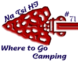

Dear Scouts & Scouters of Monmouth Council,
The Order of the Arrow is a national
brotherhood of scout honor campers. The main purposes of the Order
are to:
1) Recognize those campers,
2) develop and maintain camping
spirit and tradition,
3) promote scout camping, and
4) crystallize
the habit of helpfulness in cheerful service.
In order to help fulfill our purpose, Na Tsi Hi Lodge #71 has prepared this "Where to Go Camping" publication. This lists a variety of campgrounds and information on Quail Hill Scout Reservation and Forestburg Scout Reservation.
Summer Camp is an integral part of a troop's year-round camping program. Monmouth Council's Summer Camp, Forestburg Scout Reservation, is an excellent place to hold your summer camp. Teeming with wildlife and natural resources, including a 55 acre lake and a 70 foot waterfall, Forestburg is 1200 acres of unspoiled woodlands in the Catskill Mountains of New York. Merit Badges are available in aquatics, scoutcraft, handicraft, ecology, technology, and field sports. Frontier Camp offers wondrous opportunities for scouts to advance. Mountain biking, swimming, boating, hiking, outpost camping, shooting, archery, rappelling, and rock climbing are among the many activities offered at Forestburg. Units even get to choose their lifestyle for the week. Billett Camp is serviced by a dining hall while Dan Beard Camp offers patrol cooking.
The Camp Promotions Committee of Na Tsi Hi Lodge #71, in addition to providing this book, offers Camp Promotions Teams. These teams are available to give presentations on Forestburg Summer Camp at Troop Meetings, Parents' Nights, Courts of Honor, or any other suitable place. Presentations can be arranged by contacting the Camp Promotions Chairman, Camp Promotions Advisor, or the Lodge Advisor.
See you in the Woods!
Yours in Brotherhood,